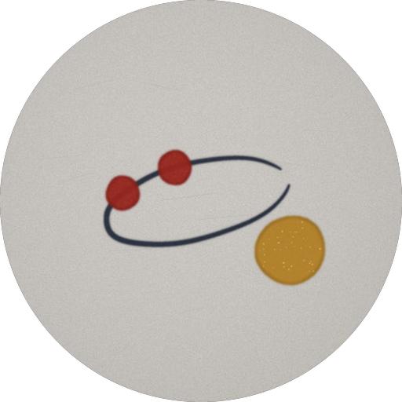

Icons cut from materials
Outlines from circle to a wide paper tile; rims of wood, steel, gold, glass, silk and mesh; embossing inside the plate; symbols in round windows; icon packs, and a picture of your own for any app.
live · the Eclipse face, drawn in the page · weather in Helsinki by Open-Meteo

A home screen for Android, made one small release at a time.
Every screen, every material, every line of logic was generated by AI — Claude Opus 5.5 — through plain conversation, and tried on a phone after each release. No Android Studio, no Gradle, no libraries.
On the screens
Outlines from circle to a wide paper tile; rims of wood, steel, gold, glass, silk and mesh; embossing inside the plate; symbols in round windows; icon packs, and a picture of your own for any app.
The first, a plate, a glass card, bubbles you drag and size by hand — and eclipse, horizon, reservoir, flip cards, a monogram, three stones. Each with the time, the weather and the charge.
Grounds drawn in layers — a light, a texture, an ornament — with dice for new ones, and a new ground while the phone sleeps if you like; or the phone's own chooser and its framing of a picture.
Ready looks, tried on before they are taken. The dice throw a look under rules of what belongs together; a lucky one kept a minute is remembered.
On the screens, with faces of four, nine, a ring, a stack — or widgets inside; and in the list of every app, which the search still looks into.
Where the hidden status bar stood: the signal, Wi-Fi, what waits unread, the date, the charge — dark on a light wallpaper, as the phone's own.
The clock across the whole screen on its side, darker than by day, into full black when untouched, quiet while open.
Lying down, every screen is seen whole: widgets and dock, rows of icons, and the rest turned into columns.
Pages
Now, the next two hours in quarters, the hours and the days, the air, pollen and the aurora — from Open-Meteo and NOAA.
The charge, the free memory and storage as three rings; the battery's health and cycles, warmth and volts; the day as the home screen counted it.
Every copy carries a small picture of the home screen as it stood. Open a copy file anywhere, and it shows itself before it comes back.
The backups of some other launchers come in too: screens, folders, widgets, dock, hidden apps, much of the look.
Touch
How it's made
Ellipse is not a Gradle project and uses no library: plain Java written against android.jar, built by one short script — aapt, javac, dx, zipalign, apksigner. It went from a bare grid to what it is now through 211 tagged versions in six days, each tried on a phone, the next asked for in words.
# build.sh, in short
aapt package -m -J build/gen -M AndroidManifest.xml -S res -I android.jar
javac -bootclasspath android.jar -d build/classes $(find src build/gen -name '*.java')
dx --dex --min-sdk-version=26 --output=build/classes.dex build/classes
aapt package -M AndroidManifest.xml -S res -A assets -I android.jar -F build/base.apk
zipalign -f 4 build/base.apk build/aligned.apk
apksigner sign --ks your.keystore --out ellipse.apk build/aligned.apk
The words of the interface are in English inside the app; Russian and Finnish come as language modules, and a template lets anyone bring another from a file.
Permissions